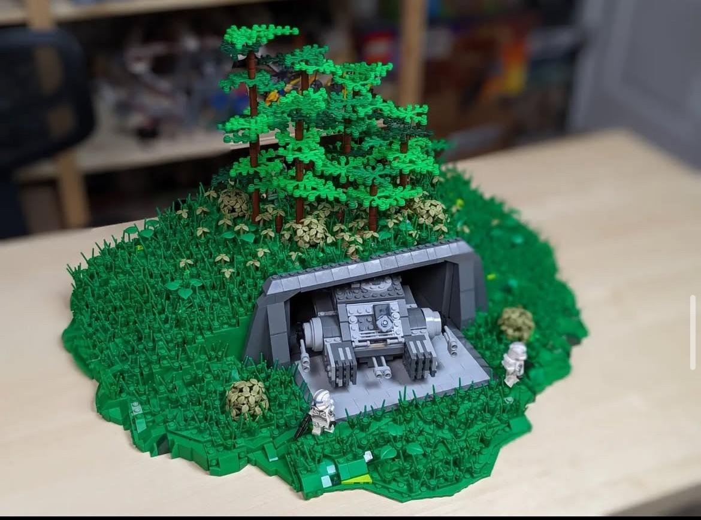
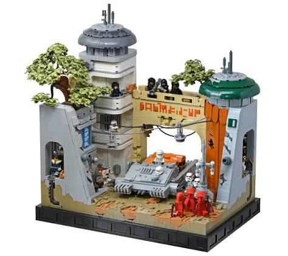
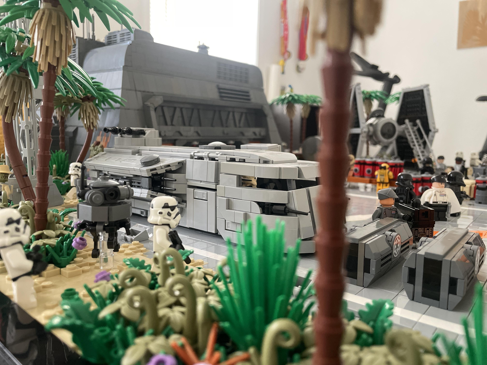
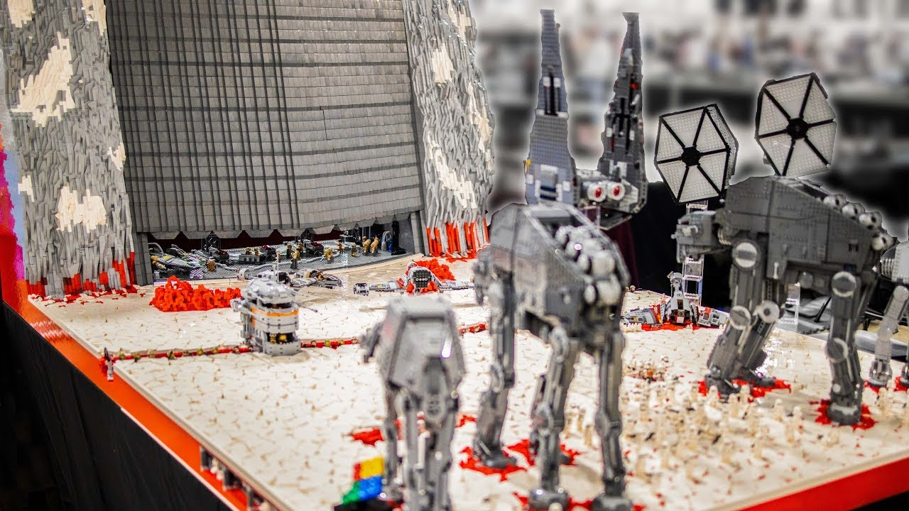
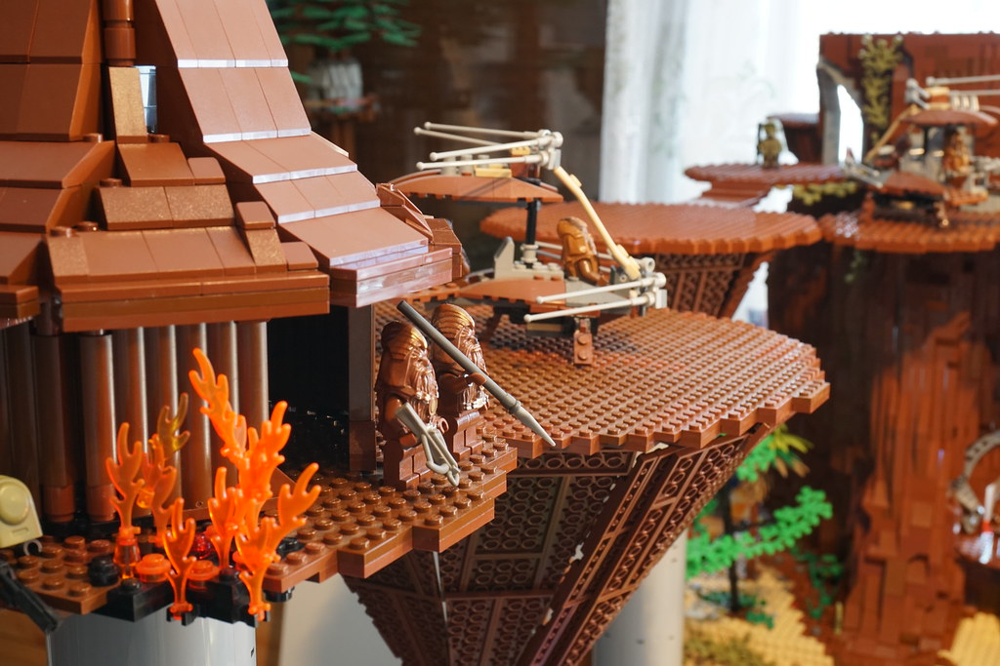
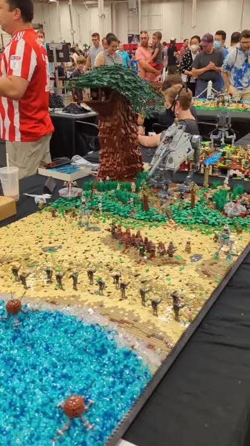
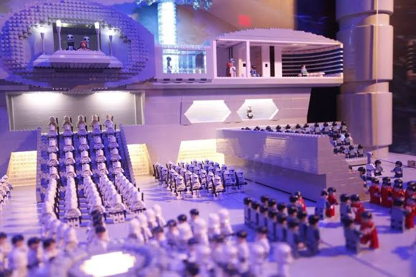

Sticky Positioning Demo
Watch how the headings "stick" to the top of the page!
01 / The starting point
Standard CSS Grid
Grid keeps items aligned to shared row tracks. When cards have different heights, the shorter cards leave empty space beneath them.







The CSS behind it
.gallery {
display: grid;
grid-template-columns: repeat(3, 1fr);
gap: 1rem;
}02 / The workaround
CSS Columns
Columns pack each image beneath the previous one, producing a masonry-like shape with only CSS. Notice that the visual order flows down each column.
The CSS behind it
.gallery {
column-count: 3;
column-gap: 1rem;
}
.gallery-item {
break-inside: avoid;
}04 / The future CSS approach
Experimental grid-lanes
This demo uses a normal Grid fallback first. If the browser supports the
experimental grid-lanes display value, the browser takes over
the packing behavior with CSS alone.
@supports (display: grid-lanes) passes.
The progressive enhancement
.gallery {
display: grid; /* fallback */
}
@supports (display: grid-lanes) {
.gallery { display: grid-lanes; }
}